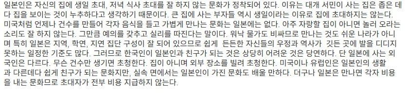

일본인은 집에 다른 사람을 잘 초대하지 않음. 그리고 초대를 한다고 해도 상당히 조심스러운데
여러 인사말이 있었지만, 그중 가장 흥미를 끄는 인사말이 있었습니다. 바로 초대받은 집에 들어가면서 하는 인사입니다. 아마도 관행적으로 외우는 것이 외국어 초심자의 태도이기는 하지만, 특이한 의미를 가진 한자를 포함하고 있으면 확인을 해봐야 하지 않겠습니까?
일본어 회화책에는 '오자마시마스(おじゃまします)'라고 되어 있고,
일본어 선생님은 무조건 관행적으로 쓰는 것이니 외워서 쓰라고 하십니다.
특히 경어체로서 예의를 갖추어야 하는 경우에는 잊으면 안 된다고 강조하시기까지 했습니다.
그런데 그 인사말의 본질에 대해서 궁금해했지만, 쉽게 속의 의미를 알 수 없었습니다. 통역직원을 통해서도 확인할 수 없었고, 짧은 일본어 실력으로도 포기하는 것이 맞는 방법이겠구나 하면서 인터넷을 뒤지기도 했습니다. 저에게는 배움을 향한 하나의 작은 도전이었습니다.
그러던 어느 날 우연히 일본 소설에서 '오자마시마스(お邪魔します)'라는 문장이 나오는 것을 확인했습니다. '오자마시마스(おじゃまします)'와 같은 뜻으로 사용하는 것을 보니 틀림없었습니다. 여기서 쓰인 단어 자마(邪魔, じゃま)를 사전에서 찾아보니 '사특(邪慝)하고 나쁜 마(魔). 몸과 마음을 괴롭혀 수행(修行)을 방해(妨害)하는 악마(惡魔)'라는 뜻이었습니다.
인사말 "오자마시마스(お邪魔します, おじゃまします)"를 한국어로 직역하면 "저는 악마입니다."라는 뜻입니다.
"나는 악마입니다."라고 인사를 하는 것이 남의 집에 들어갈 때 해야 하는 일본인의 높임 인사말입니다. "실례합니다(失礼します, しつれいあいます)"라는 말보다 경어체로 쓰이면서 외국인에게는 관용구로 배우게 하는 이유는 무엇일까요?
한 일본거주 한국인으로부터 이런 얘기를 들었습니다.
'이 인사말은 에도시대로 거슬러 올라갑니다. 일본을 통일한 도쿠가와 이에야스가 민정 시찰을 나갔을 때, 아주 큰 회당을 짓는 광경을 목격했답니다. 이 회당은 누구가 짓느냐고, 교인들입니다. 교인이 무슨 돈이 있어서 이렇게 큰 회당을 짓느냐? 교인들이 십시일반으로 헌금이라는 것을 낸 것이라고 합니다. 교인들은 무엇을 얻느냐? 믿는 하나님이 죽으면 천국에 보내준다고 믿고 있답니다. 그 하나님이 어디에 거처하느냐? 하늘에 있답니다. 그 말은 들은 도쿠가와 이에야스는 자식과 같은 부하를 잃어가고 목숨을 던져가면서 성(城)을 하나씩 점령했는데, 이 기독교는 보이지 않는 신(神)을 믿으면서 이렇게 성(城)만 한 회당(會堂)을 짓는 모습을 통해 '기독교의 위력'에 겁을 먹게 되었답니다. 그리고는 기독교를 탄압하기 시작했고, 절(寺)은 공부방 겸 등기소로 전락시켰답니다.
기독교를 탄압하면서 '오호담당제(五戶擔當制)'로 서로 기독교인이 있으면 신고하도록 관리했고, 여러 집의 사람들이 한 집에 모이면 의심했고, 신고하지 않으면 다섯 가구 전체가 죽임을 당하게 되니, 남의 집에 가서 십자가 형상을 보게 되면 바로 신고를 해야 하는 상황이 되었던 것입니다. 이로 인해서 외부인을 초대하는 일이 거의 없어졌다고 합니다.
그러니 남의 집에 들어간다는 것이 그 집에는 '악마'로 보이기에 충분한 것이 되었습니다."
에도시대 250년 동안 '기독교'를 탄압한 흔적은 아직도 선명하게 남아있고, 선교사들에게 일본은 '선교의 무덤'이라고 불릴 정도로 어려운 곳이라고들 하는데, 이러한 역사적 배경을 간과할 수 없는 것 같습니다.
그래서 남의 집을 방문할 때는 "악마입니다."라고 들어가고 나올 때는 "악마였습니다."라고 인사를 하게 된 것이라고 합니다. 그것이 오랜 세월이 지나면서 관용구로 굳어진 것이라고 볼 수 있습니다. 이 인사말은 "진지 드셨어요?"라고 하는 한국의 관용적 인사말과 유사한 배경을 가지고 있는 것으로 볼 수 있습니다.
일본에서 남의 집 방문 할때 인사말이 "오자마시마스(お邪魔します, おじゃまします)"
여기서 '자마(邪魔)'는 불교에서 몸과 마음을 괴롭히는 '악마나 방해꾼'을 뜻하는데. 즉, 직역하면 "내가 이 집의 평화로운 공간을 방해하는 방해꾼(악마) 역할을 하겠습니다"라는 뜻이 됨.
가족들만의 사적인 공간에 내가 끼어들어 번거롭게 만든다는 미안함과 자신을 극도로 낮추는 겸양의 표현이 인사말에 그대로 녹아있는 셈이고
서로 사전에 합의되어 초대받고 들어갈때도 이런 인사말을 쓰는데
아무런 합의없이 방문해서 들어가겠다고 하는건 큰 실례임
너 병원 좀 가봐라